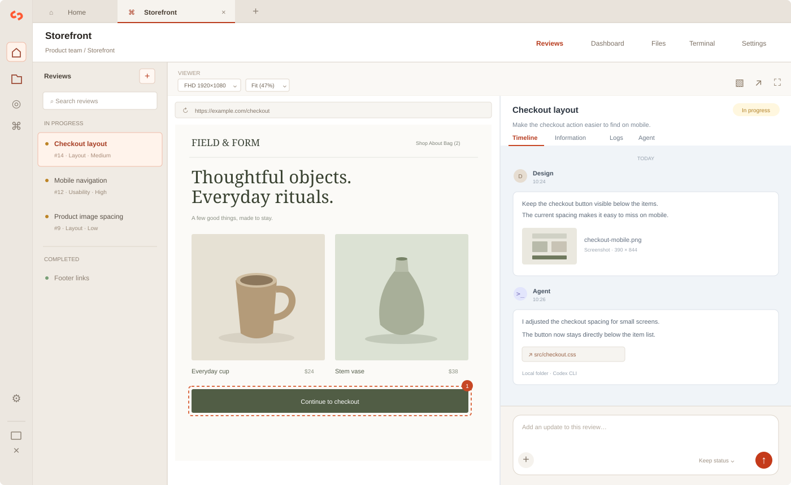

Give every review a home.
Organize projects inside groups. Track reviews, priorities, and progress without losing the conversation.
No matching languages
YOUR WORK, IN ONE PLACE
Keep the page, the conversation, and the work together. A desktop workspace for project reviews and Codex tasks — stored on your computer.
macOS 13+ · Apple Silicon & Intel · Windows 10/11 x64 · MIT license

Illustrative interface with sample content. Your projects and review data stay on your computer.
No ReviewOps account required
Local folders or SSH hosts
Open source, ready to make your own
A COMPLETE REVIEW WORKSPACE
A review should carry its context with it, from the first screenshot to the last change.
Organize projects inside groups. Track reviews, priorities, and progress without losing the conversation.
Keep the website beside the review and check desktop, tablet, and mobile sizes. Screenshots, browser logs, and files appear as separate attachment buttons. Open an attachment in a popup without leaving the review.
Send instructions and attachments to Codex CLI on your computer or an SSH host. Follow the response alongside the review.
Manage SSH hosts and Codex accounts in the sidebar. Choose a saved host when connecting a project.
Choose your interface language in Settings. Search long dropdown lists and use the keyboard to move through them.
Review data lives in local SQLite and files. Export project backups and get new app versions from GitHub Releases.
FROM THE FIRST OPEN
Start with a project. Keep the decisions, files, and follow-up work together as it grows.
Create a group and project. Select a local folder or a saved SSH host and working directory.
Open the website, record what needs changing, and attach screenshots, logs, or files.
Discuss the change in the timeline or send a Codex task. Keep the result with the original review.
BEFORE YOU START
No ReviewOps server or account is required. Reviews and attachments are stored on your computer. External websites, SSH connections, Codex, and update checks use the network when you use those features.
ReviewOps runs Codex CLI in the selected local folder or directly on the selected SSH host. Install and sign in to Codex in that environment first. Tasks run with the permissions of that account, without an additional app sandbox.
ReviewOps supports macOS 13 or later on Apple Silicon and Intel, and 64-bit Windows 10 and 11 on Intel or AMD processors. Choose the installer for your operating system.
On macOS, select the sidebar update notification to download, verify, install, and restart the app. Finish local tasks and file transfers and close terminal sessions first. For official Windows updates, download the installer from this page and run it. Enable Get test versions in Settings → Automatic checks → App updates to try a version before its official release. Only the latest test build stays available. On Windows, use Download installer and then Open installer; ReviewOps does not close automatically. Turning the option off selects future official updates without downgrading the app or changing project data.
Codex tasks started on a Linux SSH host with ReviewOps 1.2.2 or later continue on the server while the app closes or updates. When ReviewOps restarts, it reconnects to the task and retrieves its output. Commands entered directly in a terminal do not use this feature.
On Windows, open the downloaded .exe file and follow the installer. The installer is not digitally signed, so Windows may display an installation warning. On macOS, open the .dmg file and move ReviewOps to Applications. The macOS app is not notarized by Apple. Read the installation guide if the operating system asks you to approve opening the app.
ReviewOps source code is provided under the MIT license. Bundled dependencies, fonts, and icons retain their own licenses, which are included in the repository and app.
MAKE ROOM FOR THE WORK
Download ReviewOps, connect a project, and bring the whole conversation into view.
Read the guide ↗